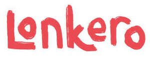

Trade Mark Journal No.2025/039 26 September 2025
UK00004265673 17 September 2025 (32,33)
Mark 1

Mark 2
Mark 3
- Class 32
- Non-alcoholic drinks; Non-alcoholic malt drinks; Carbonated non-alcoholic drinks; Non-alcoholic fruit drinks; Non-alcoholic beverages; Beverages (Non-alcoholic -); Isotonic non-alcoholic drinks; Cordials (non-alcoholic beverages); Non-alcoholic carbonated beverages; Non-alcoholic beer flavored beverages; Non-alcoholic malt beverages; Cola drinks; Fruit beverages (non-alcoholic); Non-alcoholic beverages flavoured with coffee; Sarsaparilla [non-alcoholic beverage]; Kvass [non-alcoholic beverages]; Non-alcoholic beverages flavored with coffee; Non-alcoholic soda beverages flavoured with tea; Cocktails, non-alcoholic; Non-alcoholic cocktails; Non-alcoholic vegetable juice drinks; Non-alcoholic beverages flavoured with tea; Non-alcoholic beverages flavored with tea; Non-alcoholic beer; Root beers, non-alcoholic beverages; Non-alcoholic flavored carbonated beverages; Non-alcoholic honey-based beverages; Honey-based beverages (Non-alcoholic -); Non-alcoholic fruit cocktails; Smoothies [non-alcoholic fruit beverages]; Non alcoholic aperitifs; Non-alcoholic sparkling fruit juice drinks; Non-alcoholic beers; Fruit juice beverages (Non-alcoholic -); Non-alcoholic fruit juice beverages; Fruit drinks; Non-alcoholic fruit vinegar beverages; Non-alcoholic beverages with tea flavor; Juice drinks; Beer-based beverages; Squashes [non-alcoholic beverages]; Alcohol free beverages; Kvass [non-alcoholic beverage]; Non-alcoholic beer-based cocktails; Carbohydrate drinks; Non-alcoholic dried fruit beverages; Non-alcoholic cordials; Aperitifs, non-alcoholic; Non-alcoholic wine; Cordials [non-alcoholic]; Non-alcoholic grape juice beverages; Non-alcoholic malt free beverages [other than for medical use]; Isotonic drinks; Non-alcoholic syrups for making beverages; Fruit-based beverages; Vegetable drinks; Syrups for making non-alcoholic beverages; Aloe vera drinks, non-alcoholic; Fruit flavoured carbonated drinks; Sherbets [beverages]; Fruit-flavoured beverages; Frozen fruit-based drinks; Fruit flavored drinks; Extracts for making non-alcoholic beverages; Guarana drinks; Fruit-based soft drinks flavored with tea; Fruit flavoured drinks; Carbonated soft drinks; Soft drinks; Fruit-flavored soft drinks; Fruit-flavored beverages; Non-alcoholic beverages containing fruit juices; Non-carbonated soft drinks; Vitamin fortified non-alcoholic beverages; Colas [soft drinks]; Sports drinks; Soft drinks flavored with tea; Non-alcoholic wines; Coffee-flavored soft drinks.
- Class 33
- Alcoholic energy drinks; Alcoholic fruit cocktail drinks; Alcoholic cocktails; Cordials [alcoholic beverages]; Low alcoholic drinks; Pre-mixed alcoholic beverages; Alcoholic beverages of fruit; Alcoholic fruit beverages; Rum [alcoholic beverage]; Alcoholic beverages, except beer; Alcoholic beverages (except beer); Beverages (Alcoholic -), except beer; Sugarcane-based alcoholic beverages; Pre-mixed alcoholic beverages, other than beer-based; Alcoholic tea-based beverage; Alcoholic beverages except beers; Alcoholic beverages (except beers); Alcoholic beverages [except beers]; Alcoholic carbonated beverages, except beer; Alcoholic coffee-based beverage; Alcoholic seltzers; Alcoholic aperitifs; Alcoholic cordials; Prepared alcoholic cocktails; Grain-based distilled alcoholic beverages; Wine-based drinks; Alcoholic beverages containing fruit; Fruit (Alcoholic beverages containing -); Alcoholic wines; Alcoholic cocktails containing milk; Alcoholic cocktail mixes; Alcoholic bitters; Flavoured brewed alcoholic malt beverages, except beers; Alcoholic aperitif bitters; Flavored brewed alcoholic malt beverages, except beers; Aperitifs with a distilled alcoholic liquor base; Rum-based beverages; Baijiu [Chinese distilled alcoholic beverage]; Alcoholic cocktails in the form of chilled gelatins; Nira [sugarcane-based alcoholic beverage]; Wine coolers [drinks]; Wine-based beverages; Preparations for making alcoholic beverages; Alcoholic preparations for making beverages; Spirits [beverages]; Alcoholic punches; Alcoholic jellies; Alcoholic extracts.
Lonkero Drinks Ltd